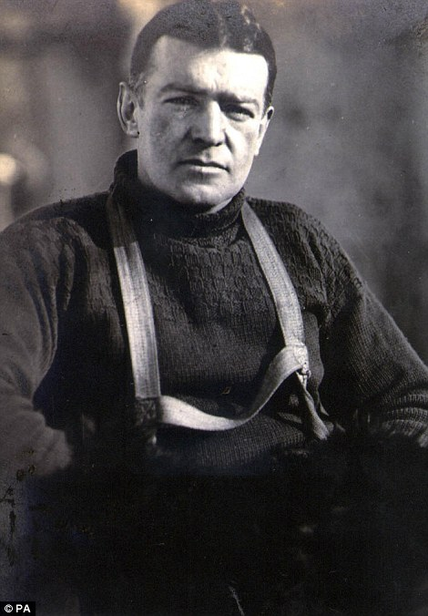

Ernest Shackleton - Captain of the Endurance
- Shackleton was born February 15, 1874.
- He was on various Antarctic expeditions before leading the Endurance.
- His ship got stuck in ice before he and his crew ever reached Antarctica.
- Once stranded, Shackleton and his crew did not touch land for 497 days.
- By the end of the expedition, despite all their hardships, the enitre crew made it back alive.
"...when disaster strikes and all hope is gone, get down on your knees and pray for Shackleton.”
- Sir Raymond Priestly